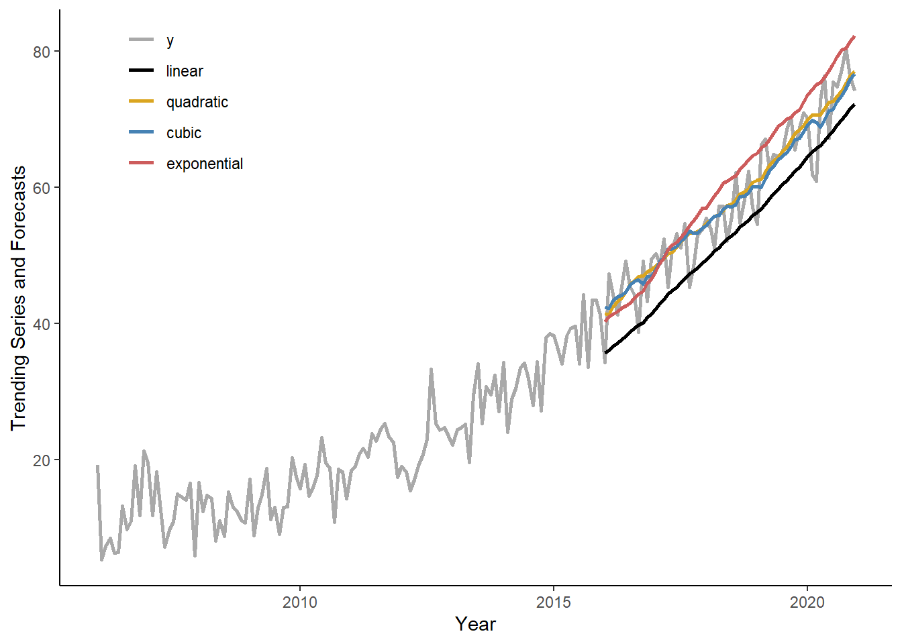

Tutorial 4: Trends and Seasonality
In this tutorial, we will generate trending series, we will apply an information criterion to select the most suitable trend model, and we will obtain and compare one-step-ahead forecasts using a rolling window procedure.
Let’s generate a time series that follows a quadratic trend: \(y_{t} = 10+0.01t+0.002t^2+e_{t}\), where \(e_{t} \sim N(0,16)\), for \(t=1,\ldots,180\).
n <- 180
set.seed(7)
e <- rnorm(n,0,4)
trend <- c(1:n)
y <- 10+0.01*trend+0.002*trend^2+eStore \(y\) and \(trend\) in a data.table, call it ‘dt’. Add some arbitrary dates to the data (e.g., suppose we deal with the monthly series beginning from January 2006).
dt <- data.table(y,trend)
dt$date <- seq(as.Date("2006-01-01"),by="month",along.with=y)Plot the realized time series using ggplot function.
ggplot(dt,aes(x=date,y=y))+
geom_line(size=1)+
labs(x="Year",y="Trending Series")+
theme_classic()
Calculate Akaike Information Criteria for linear, quadratic, cubic, and exponential trend models, using all observations in the series.
AIC_vec <- matrix(ncol=4,nrow=1)
for(i in 1:4){
if(i < 4){
reg <- lm(y~poly(trend,degree=i,raw=T),data=dt)
AIC_vec[i] <- log(crossprod(reg$residuals))+2*length(reg$coefficients)/n
}else{
reg <- lm(log(y)~trend,data=dt)
yhat <- reg$fitted.values
sig <- sd(reg$residuals)
ystar <- exp(yhat+sig^2/2)
res <- dt$y-ystar
AIC_vec[i] <- log(crossprod(res))+2*length(reg$coefficients)/n
}
}
AIC_vec## [,1] [,2] [,3] [,4]
## [1,] 8.879646 7.841645 7.849521 7.975999Generate a sequence of one-step-ahead forecasts from linear, quadratic, cubic, and exponential trend models, using the rolling window scheme, where the first rolling window ranges from period 1 to period 120.
dt$t1 <- NA
dt$t2 <- NA
dt$t3 <- NA
dt$te <- NA
R <- 120
P <- n-R
for(i in 1:P){
reg1 <- lm(y~trend,data=dt[i:(R-1+i)])
dt$t1[R+i] <- reg1$coef[1]+reg1$coef[2]*(R+i)
reg2 <- lm(y~poly(trend,degree=2,raw=T),data=dt[i:(R-1+i)])
dt$t2[R+i] <- reg2$coef[1]+reg2$coef[2]*(R+i)+reg2$coef[3]*((R+i)^2)
reg3 <- lm(y~poly(trend,degree=3,raw=T),data=dt[i:(R-1+i)])
dt$t3[R+i] <- reg3$coef[1]+reg3$coef[2]*(R+i)+reg3$coef[3]*((R+i)^2)+reg3$coef[4]*((R+i)^3)
rege <- lm(log(y)~trend,data=dt[i:(R-1+i)])
sig <- sd(rege$residuals)
dt$te[R+i] <- exp(rege$coef[1]+rege$coef[2]*(R+i)+sig^2/2)
}Plot the original series overlay by the one-step-ahead forecasts from the four considered trend models. Note, for convenience we will first ‘melt’ the data.table in to the ‘long’ format.
dt_long <- melt(dt[,.(date,y,linear=t1,quadratic=t2,cubic=t3,exponential=te)],id.vars="date")
ggplot(dt_long,aes(x=date,y=value,color=variable))+
geom_line(size=1,na.rm=T)+
scale_color_manual(values=c("darkgray","black","goldenrod","steelblue","indianred"))+
labs(x="Year",y="Trending Series and Forecasts")+
theme_classic()+
theme(legend.title=element_blank(),legend.position=c(.15,.85))
Calculate the RMSFE measures for each of the two forecasting methods.
dt[,`:=`(e_t1=y-t1,e_t2=y-t2,e_t3=y-t3,e_te=y-te)]
rmsfe_t1 <- sqrt(mean(dt$e_t1^2,na.rm=T))
rmsfe_t2 <- sqrt(mean(dt$e_t2^2,na.rm=T))
rmsfe_t3 <- sqrt(mean(dt$e_t3^2,na.rm=T))
rmsfe_te <- sqrt(mean(dt$e_te^2,na.rm=T))
rmsfe_t1## [1] 6.151904rmsfe_t2## [1] 3.796861rmsfe_t3## [1] 3.906023rmsfe_te## [1] 5.132312Page built: 2022-07-07 using R version 4.1.2 (2021-11-01)